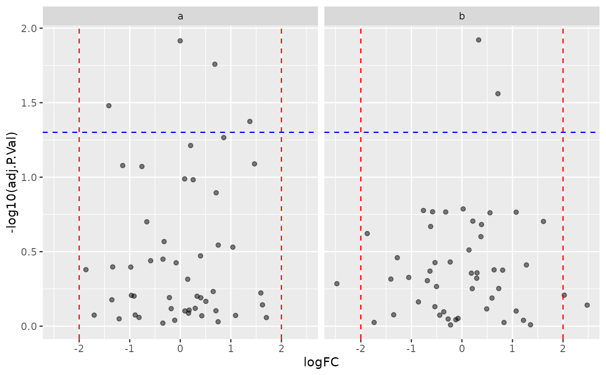

plot volcano given multiple contrasts
Usage
multigroup_volcano(
.data,
effect = "fc",
significance = "p.adjust",
contrast = "condition",
colour = "colour",
xintercept = c(-2, 2),
yintercept = 0.05,
label = NULL,
size = 1,
segment.size = 0.3,
segment.alpha = 0.3,
scales = "fixed",
maxNrOfSignificantText = 20
)Arguments
- .data
data in long format
- effect
column containing effect sizes
- significance
column containing p-values, q.values etc
- contrast
column with contrast
- colour
colouring of points
- xintercept
fc thresholds
- yintercept
significance threshold
- label
column containing labels
- size
controls size of text
- segment.size
controls size of lines
- segment.alpha
controls visibility of lines
- scales
parameter to ggplot2::facet_wrap
- maxNrOfSignificantText
maximum number of significant labels to display
Examples
show <- data.frame(logFC = rnorm(100, 0, 1), adj.P.Val = runif(100, 0, 1),
Condition = sample(c("a","b")), colour = "forward", Name = paste0("n", 1:100))
prolfqua::multigroup_volcano( show,
effect="logFC",
significance = "adj.P.Val",
contrast="Condition",
colour=NULL,
label="Name",
maxNrOfSignificantText = 300)
